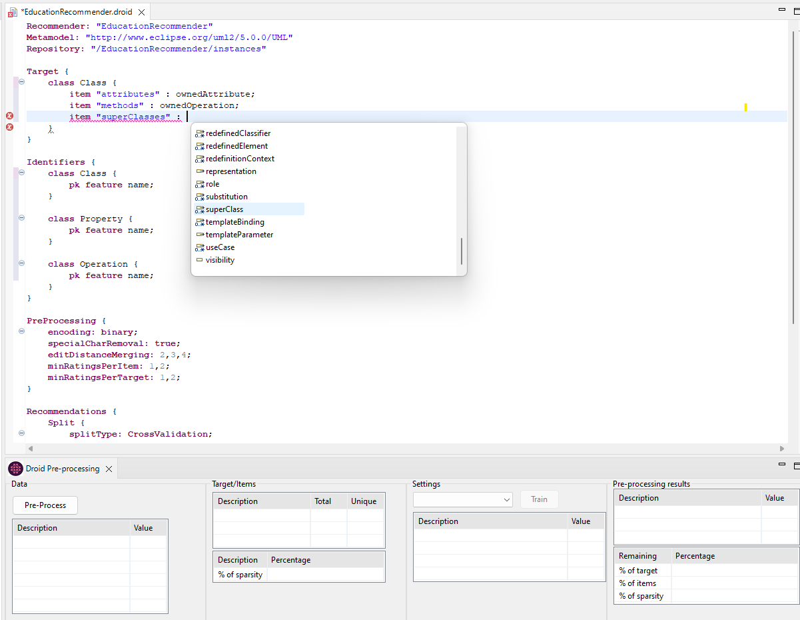
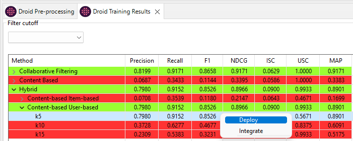

A model-driven solution to automate the configuration, evaluation and synthesis of recommender systems for modelling languages.
A model-driven solution to automate the configuration, evaluation and synthesis of recommender systems for modelling languages.
Droid is a framework that automates the configuration, evaluation and synthesis of recommender systems for modelling languages. The framework supports:
Droid is composed mainly of an Eclipse Textual Domain-specific language (DSL) that is the heart of the Droid configurator. Droid allows, via the DSL, the configuration of every aspect of the RS including the definition of the type of the recommended modelling elements, gathering and preprocessing of training data, configuration of recommendation methods, and definition of metrics to evaluate the created RS. The selected recommendation method is deployed as a service; which then heterogeneous modelling clients can integrate. Moreover, the language is extensible with new data sources and recommendation methods.
Currently, we provide automated, out-of-the-box integration with the tree editor of the Eclipse Modeling Framework (EMF). Additionally, the generated recommenders can be integrated with other modelling technologies.
The purpose of this tutorial is to provide an introduction to Droid by guiding you through the process of building a simple recommender for class diagrams in UML models. The recommender will suggest attributes, operations, and superclasses to be recommened to classes.
This tutorial will guide you through the necessary steps to create a Droid project that define a set of recommender systems to generate and evaluate. It will show you all the features that Droid provides for the automatic pre-processing, configuration, evaluation and synthesis of recommender systems for modelling languages.
This tutorial is designed for recommender systems developers and users of modelling tools that are interested in generating tailored recommender systems for arbitrary languages. Before proceeding with this tutorial you should have a good understanding of the Eclipse Modelling Framework (EMF). If you need more information regarding EMF you can find it here. A basic understanding of Eclipse IDE is also required because the examples have been compiled using the Eclipse IDE.
Creating a new Droid Project
To create a new Droid project first select File → New → Other… from the main menu. The dialogue will offer different project types. Select New Droid Project from the category Droid and continue via Next.
The wizard will guide you through the new project creation process. It will require you to introduce the project name and to select the format of the meta-model/models of the language for which the RS is being developed (Ecore/XMI, Ecore/Ecore, or Ecore/UML). Additionally, an optional checkbox offers a default set of recommendation setting options.
Here we set the name to EducationRecommender, selected the checkbox for default values for recommendation setting and chose Ecore/UML for the technology.
Once you have provided the initial information, the wizard will prompt you to input the data necessary for training and testing the recommender systems. You can use the DataSourceLocal option to load data directly from your local directory, the MDEForge to query a cloud-based model repository, or MAR to query a search engine. For the purposes of this example, we will be using MAR.
To query the MAR, simply add your keywords to the search box, separated by commas. For example, let's add the keywords alumni and school. You don't need to specify the model extension, as Droid will do this automatically. Once you've entered your keywords, click the Search button. You'll see a list of models and the total number of hits from your query. From here, you can select the models you want to import. In this case, we're selecting all the models and clicking the Import button.
After all of the models have been imported, the Finish button will become available. Click this button, and Droid will ask if you want to convert the project into a Xtext project. Answer Yes, and Droid will create the project for you.
Once you've completed the previous steps, the Droid project will be created and the editor will appear, displaying the default configuration settings provided by the Droid wizard. The editor will describe the class subject to recommendations, called the target; the items that will be recommended; the pre-processing techniques that will be used; and the configuration settings for the recommendations themselves. This includes the splitting configuration, recommendation methods, and evaluation protocol.
The following image presents a pre-configured Droid project. In the editor, you can define the target and items for the recommender systems, as well as the identifiers for each class. You can also modify the proposed setting or leave it with the provided default values. In addition, the Droid IDE provides code completion and code validation.
In this example, we have defined the class Class as target. For the items we defined ownedAttribute with the alias "attributes", ownedOperation with the alias "methods" and superClass with the alias "superClasses". As primary key and feature we used name.
Defining the data pre-processing configuration
For the data pre-processing configuration each option is a list and Droid computes each combination. We specified special character removal as true and false, the edit Levenshtein distance merging numbers 2, 3 and 4, and for minimum ratings per items and per target the numbers 1 and 2.
After we finished defining the pre-processing functionalities, we save our project and press the button Pre-Process. In the Droid Pre-Processing view, the result is shown in 4 different sections. In the first one, the data section, the statistics for the data provided is shown. Then, in the target/items section, the information regarding the target and items is presented. In the third one, the Settings section, each configuration combination is shown with the details. And finally, in the last section, pre-processing results section, the results of applying each particular definition are shown. The configuration options are ranked in order of relevance.
Defining a set of recommender systems to generate and evaluate
The recommendations section is divided into 3 parts. In the first one, Split, the configuration for data splitting is set. Here we defined a cross-validation type with 10 nFolds following a per user. In the second, Methods, the different algorithms we want to try are defined as well as the neighbourhood sizes. Here we included each method supported by Droid and the neighbourhood sizes 5, 10 and 15. Finally, the Evaluation part includes the metrics we want to specify to evaluate the recommenders, the cutoff values, the maximum number of recommendations, and the relevance of thresholds. Here we specified each metric supported by Droid; cutoff values of 5,10 and 15; maximum recommendations of 5; and relevance of threshold of 0.5.
After defining the necessary information and saving the Droid project a set of Java classes are generated. With this information generated, and the selected pre-processing configuration setting, we proceed to press the button Train. For this example, we chose configuration 22.
Visualizing the results
Finally, The Droid Training Results view is automatically populated with the evaluation results in a drill-down table for each recommendation method and metric. The results are grouped by the recommendation methods categories: Collaborative Filtering, Content-Based and Hybrid. The table makes use of different colours to facilitate the comparison of the metric values based on the metric F1. The recommendation methods with results in the top 20% are shown in green; the ones under the median are in red; and the rest are shown in orange. You can right-click on the preferred method to deploy it into a generic REST service (DroidREST).
Droid has undergone multiple stages of development since its initial release. To use Droid within Eclipse, you have the option of integrating it through any of the available update sites below.
The Development updates contains the most recent stable state of Droid and is regularly updated after a successful modification has been made. On the other hand, the Stable updates features the latest version of Droid that has been released.
| Release | Eclipse Update Site URL |
|---|---|
| Development | https://Droid-dsl.github.io/droid/eclipse/updates/latest/develop/ |
| Stable | https://Droid-dsl.github.io/droid/eclipse/updates/latest/stable/ |
This video shows a tool demo for building recommender systems for modelling languages with Droid.
The data used for our evaluations is located within this 'Data' folder, which is named according to the training date. Inside, you'll find a 'dataset' folder containing the models or metamodels used for training, as well as a 'results' folder with the corresponding result data.
This project has received funding from: